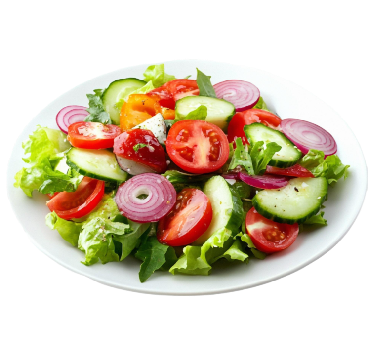
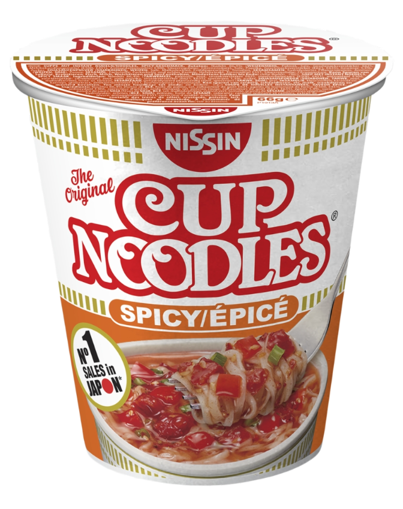

Congratulations, you've just stumbled upon THE guide that will actually save your life in Manipal (you're welcome).
Forget those boring WhatsApp groups with 200 unread messages, this webpage is your one-stop shop for surviving monsoon floods,
mess food, and how to live in a hostel as a fresher.
🌦️ The Wild & Wacky Weather of Manipal
Manipal weather is unpredictable at best and downright mischievous at worst. One minute
it's bright and sunny, the next you're caught in a downpour that feels like the skies are
testing your patience. Umbrellas aren't accessories here, they're survival gear.
Forget to carry one, and you'll quickly learn why Manipal rain has a reputation of its own.
THE GOLDEN RULE
Never, and I say never, leave your room without an umbrella. Manipal rain has a sixth sense —
the moment you step outside without an umbrella,
boom, instant flood. Coincidence?
I think not.
RAINCOAT VS WINDCHEATER
Umbrellas die or get stolen in the first week,
so the real battle is Raincoat vs. Windcheater.
Spoiler:
nothing wins. You'll still end up drenched, just more stylishly.
UMBRELLA STOLEN?
"You keep a Gold Chain in the middle of a road and it won't get stolen, keep an umbrella there for 5 minutes and you will never find
it again."
The only solution is - pick up another umbrella (doesn't matter whos) and move on.
(Or just get drenched in the rain if you don't wanna steal stuff)
HOW DO I DEAL WITH SHOES?
Pro tip: Don't even think about wearing white sneakers.
Manipal mud will destroy them faster than your GPA after midsems. (personal experience)
Crocs are ugly, yes, but they survive the apocalypse.
WEATHER ROULETTE
It's sunny → you sweat.
Five minutes later → monsoon.
Then humidity cooks you alive. Basically, pack for Mawsynram and the Sahara. On the same day.
Wear something that actually supports you through this chaos, not give up and make you look miserable.
🍽️ Mess Food: Sometimes Yum, Sometimes... Run!
The mess is where every Manipal student discovers two things: patience and creativity.
The food here has its ups and downs, but don't worry, I've collected a few tried-and-tested
hacks to make sure you don't just survive, but thrive.
Menu Surprises
Every day is a new discovery; some days paneer will make you smile,
other days dal will remind you of home. Keep an open mind, and you'll always
find something to fill you up.
If there is nothing interesting, just fill your plate with curd and rice and you are good to go!

Salad Bar Strategy
Don't ignore the humble salad. A bit of cucumber, onion,
or tomato on the side can refresh your plate instantly.
Special Dinners
Occasionally, the mess rolls out “special” menus—biryani,
desserts, fruit punch drinks or festive treats. That's your cue to go early before
the lines triple up, and you are left standing there for a sweet 20 minutes
before even having the thought of getting to where the food is.
The Mess Food vs. Wallet Battle
Here's the truth: some days, the mess food might not hit the spot.
And that's when Swiggy, Zomato, night canteen or the food court start
looking way too tempting.
But heres the catch: ordering outside regularly = bye-bye savings.
So try bearing with the mess food or else ya'll will be up for some serious
money talk with your parents.
🏠 Hostel Life: The Real Manipal Experience
Living in a Manipal hostel is the beginning of living your life in independence, chaos, and unexpected fun.
It's where you learn to share space (and snacks), survive on midnight Maggi, and adjust to
noise levels that could rival a concert. Between the laundry struggles, spontaneous hangouts,
and countless inside jokes, hostel life becomes less about the room you stay in and more about
the memories you create. This is where strangers turn into friends, and everyday routines turn
into stories you'll tell for years.
🛏️ ROOMMATE CHRONICLES
From late-night banter to “who stole my snacks omg” your roommate becomes
family (or your biggest test of patience). Either way, it's never boring. Best of luck trying
to adjust with an unknown person for atleast a year (Or more).
Introverts, beware, the first one month will be nightmarish for y'all but its gonna be one hell of a ride, One
you will remember for the rest of your life.
Just try to fit in and not fight over who eats whos snacks.

🍜 MIDNIGHT HUNGER RUNS
The mess closes around 9:30 p.m, but hunger doesn't. Whether it's Maggi, instant cup noodles,
shawarma, rolls, chips, biscuits, the holy NIGHT CANTEEN is there to save you.
A single can of MONSTER or a cup of hard coffee from the night canteen is enough to help you
pull those all-nighters, a day before your midsem exams. (who studies earlier in college bruv)
🎶 HOSTEL NOISE 101
Silence? What's that? Expect a mix of guitar jams, heated FIFA matches, people yelling and celebrating
something or the other, and random 3 AM philosophical debates echoing through the walls and doors.
Just putting a cushion over your head and trying to sleep is the best way to go.
🤝 FRIENDS FOR LIFE
Hostel corridors are where strangers turn into brothers, sisters, and partners-in-crime.
The bonds you make here outlast the WiFi outages (and that's saying something).
These people will become your home for the next 4 years, BUT BUT BUT, expect the hardest
of betrayals from atleast one of them, a betrayal worse than when Katappa killed Baahubali,
and that one betrayal will test the bonds of your entire friend group, breaking it into groups of people
who actually care about each other and dont just save names from whatsapp groups, just to forget about them later.